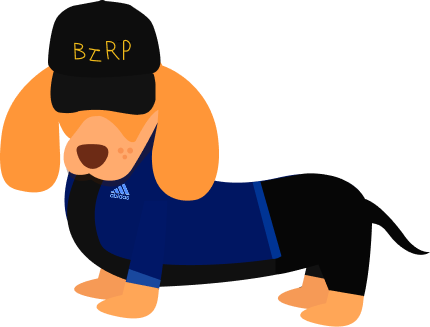
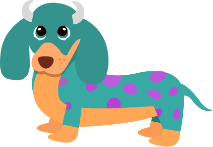
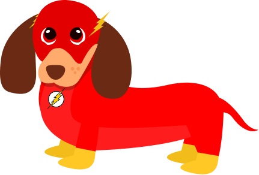
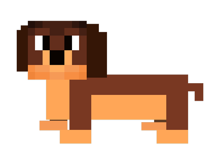

SUKI es tu compañero de hábitos. Creá objetivos, mantené tu racha, ganá puntos y desbloqueá skins de perros salchicha únicos.
Empezar ahora
SUKI es una app para plantear y cumplir objetivos personales. Su nombre viene de Suki, el perro salchicha de Lucas. Cada objetivo completado suma un día a tu racha, te da puntos y desbloquea recompensas. El progreso acá se celebra, no se ignora.
Podés crear objetivos de tiempo (ej. estudiar 1 hora al día, con cronómetro incluido) o de acción (ej. tomar 8 vasos de agua, con contador de pulsaciones).
Elegí entre objetivo por tiempo (cronómetro) o por acción (contador). Dale un nombre y configurá la meta diaria.
Cuando terminás el tiempo o alcanzás la cantidad de acciones, el objetivo se marca como cumplido y tu racha crece.
Con los puntos acumulados comprás skins exclusivas en la tienda y desbloqueás logros únicos por tus hitos.
Usá el cronómetro integrado. Cuando llega a cero, el objetivo del día queda cumplido automáticamente.
Presioná el botón cada vez que realizás la acción. Al llegar a la cantidad configurada, listo.
Cada día que cumplís sumás un día a tu racha. ¡No la rompas y llegá a nuevos récords personales!
Desbloqueá insignias especiales por hitos: tu primer objetivo, 7 días seguidos, 30 días y mucho más.
Gastá tus puntos en skins de perros salchicha de distintas rarezas: comunes, raras, épicas y legendarias.
Personalizá tu avatar con la skin que elegiste y llevá el registro completo de tu progreso.
Cada skin tiene su rareza y personalidad. ¿Cuál vas a desbloquear primero?

BzRP
Solivan De Oro
De Oro

Flash
SalchicraftCreá tu cuenta gratis y empezá a cumplir tus objetivos hoy mismo.
Crear mi cuenta¿Ya tenés cuenta? Iniciá sesión